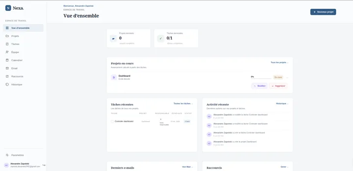
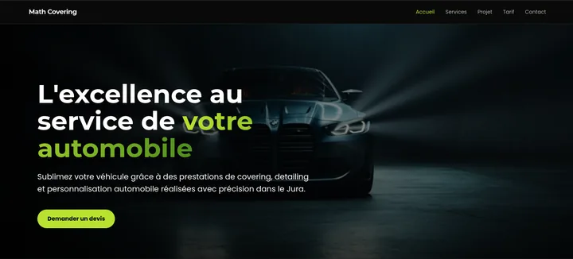
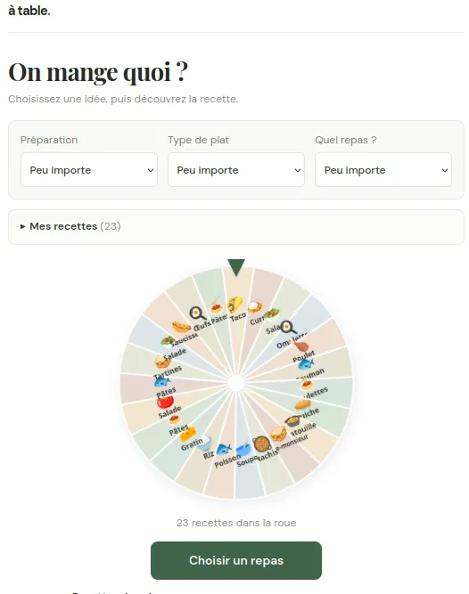
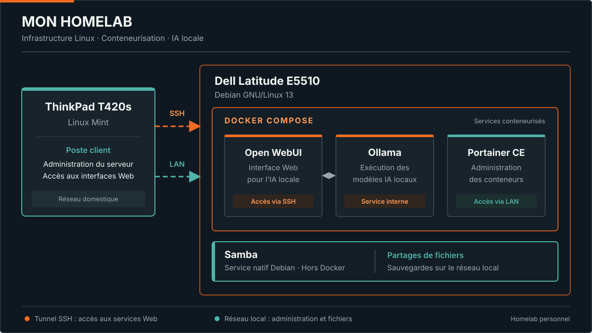
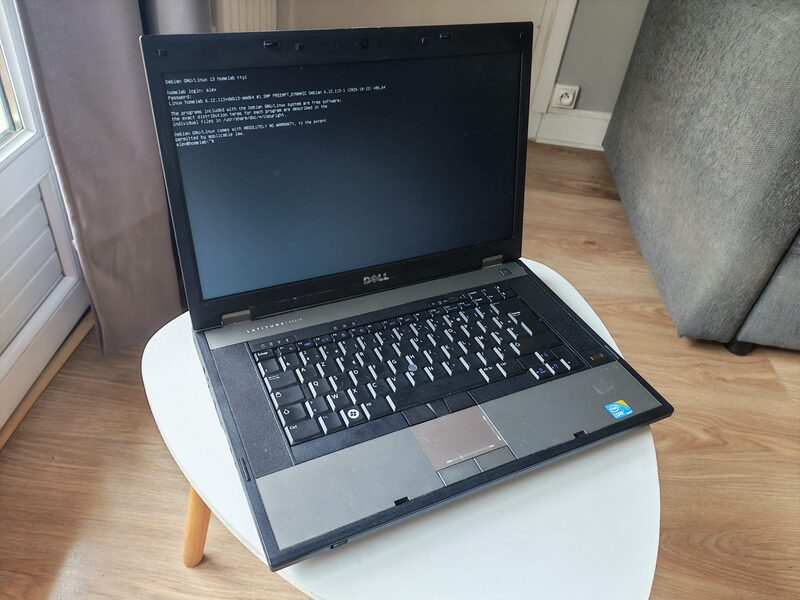

À propos
Après un BTS Négociation et Digitalisation de la Relation Client et une expérience de conseiller de vente automobile, je me reconvertis dans la tech. Je suis aujourd’hui en Bachelor 3 Développement Web chez DECODE.
Le déclic
Tout est parti de l’envie de comprendre ce qui se passe derrière l’écran. En transformant un vieil ordinateur portable en serveur personnel, j’ai pris goût à configurer, tester, casser, réparer et documenter. C’est ce plaisir de bidouiller jusqu’à ce que ça marche qui m’a donné envie d’en faire mon métier.
Ce que j’apporte
Mon passé commercial m’a appris à écouter un besoin et à le reformuler. La technique me permet d’y répondre concrètement, quel que soit l’outil : j’apprends vite et je m’adapte à l’environnement de l’équipe.
Mon parcours
2026-2027 : Bachelor 3 Développement Web — DECODE (en cours)
- Développement front-end et back-end, algorithmique, bases de données et administration Linux.
- Découverte de Docker, Symfony et Vue.js, de la sécurité web, du développement collaboratif et de l’intelligence artificielle.
- Projets pratiques pour appliquer les connaissances acquises pendant l’année.
2025-2026 : Conseiller de vente automobile — Peugeot
- Accompagnement des clients particuliers et professionnels dans leurs projets automobiles.
- Analyse des besoins, présentation de solutions adaptées et suivi commercial.
- Traduire un besoin client en solution adaptée : la même démarche que l’analyse d’un besoin fonctionnel.
2023-2025 : BTS Négociation et Digitalisation de la Relation Client (NDRC) — CFA ISCIO, en alternance chez Hyundai
- Techniques de vente, relation client et digitalisation des activités commerciales.
- Expérience en entreprise chez Hyundai : prospection, analyse des besoins et suivi client.
- Premier contact avec le web à travers WordPress et PrestaShop.
Compétences
-
Front-end
HTML CSS JavaScript React
-
Back-end
PHP Node.js Express
-
Bases de données
MySQL PostgreSQL
-
Système & déploiement
Linux (Debian) Docker Docker Compose SSH
-
Outils
Git GitHub VS Code
-
En cours d’apprentissage
Symfony Vue.js
-
Savoir-être
Écoute du besoin client Communication Négociation Organisation
Objectifs
En Bachelor 3 Développement Web, je recherche une alternance (1 semaine à l’école / 3 semaines en entreprise) dès que possible, en Île-de-France.
Je suis ouvert à tous les postes de la tech : développement, systèmes, support, outils internes et à toutes les technologies. J’apprends vite et j’aime comprendre comment les choses fonctionnent.
Me contacterProjets
-

Nexa
Une application web de gestion de projets permettant d’organiser les tâches, de suivre leur avancement et de gérer les membres d’une équipe avec un système de rôles et de permissions.
Concevoir une application complète : gestion des droits, base de données et mise en ligne.
React Node.js Express PostgreSQL Docker
-

Math Covering
Un site vitrine de démonstration pour une activité de covering et de detailing automobile.
Concevoir un site lisible sur mobile comme sur ordinateur et le mettre en ligne.
HTML CSS JavaScript
-

À table
Une application de recettes permettant de trouver une idée de repas grâce à une roulette, de filtrer les recettes et de gérer ses recettes personnelles.
Penser une application autour d’un usage quotidien : trouver vite une idée de repas.
HTML CSS JavaScript
Homelab
Mon homelab est un serveur personnel basé sur un ancien Dell Latitude E5510 sous Debian GNU/Linux 13. Je l’ai mis en place pour expérimenter l’administration système Linux, l’auto-hébergement de services, la conteneurisation et l’intelligence artificielle locale.

-

Matériel
Un ancien ordinateur portable recyclé en serveur personnel.
Dell Latitude E5510 Intel Core i5 M 560 4 Go RAM SSD 250 Go
-
Système et services
Des services conteneurisés que j’héberge et supervise moi-même : une IA qui tourne en local, une interface d’administration et un partage de fichiers sur le réseau.
Debian 13 Linux Docker Docker Compose Open WebUI Ollama Portainer CE Samba
-
Ce que j’y apprends
Administrer un serveur à distance de façon sécurisée, diagnostiquer ce qui ne marche pas et documenter chaque étape.
Administration système Linux SSH Docker Réseau Pare-feu UFW IA locale Dépannage Documentation technique
Contact
Une alternance, un projet ou une question sur mon parcours ? Écrivez-moi via le formulaire, par e-mail, ou retrouvez-moi sur LinkedIn et GitHub.